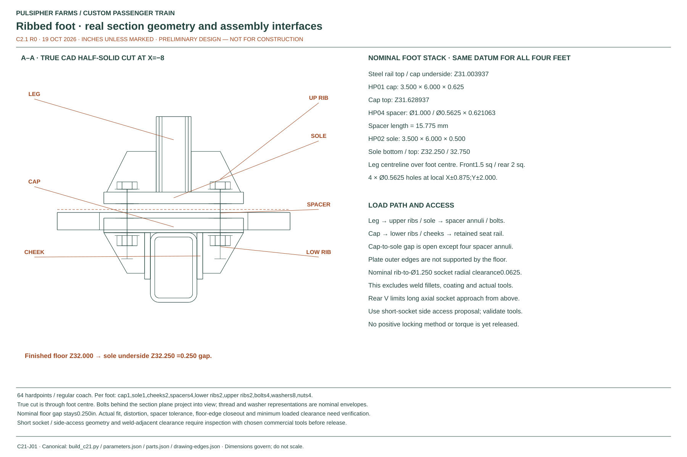
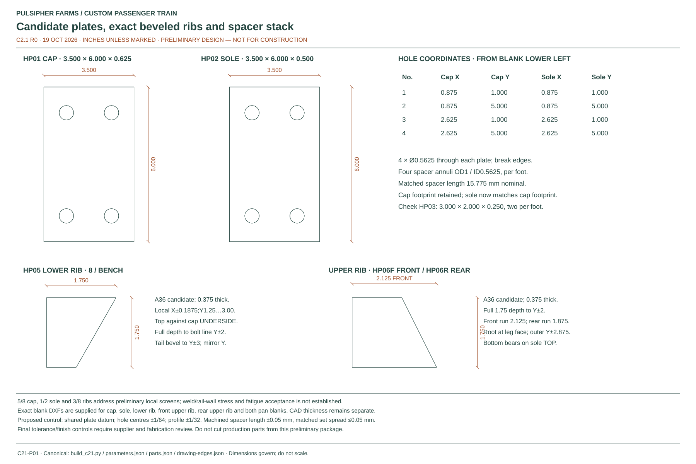
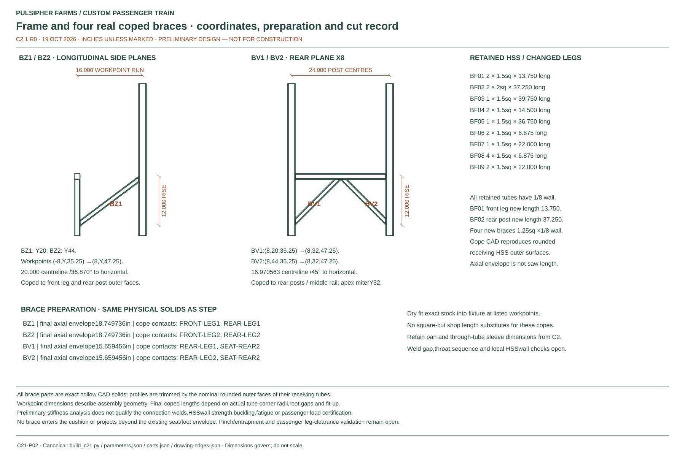

C2.1 · R0 · 19 OCTOBER 2026
Braced benches.
Smaller steel floor mounts.
Four fitted braces stiffen each two-person bench. Compact ribbed feet remove unused plate weight while retaining the 32-seat regular-coach layout.
Preliminary development issue. The geometry, calculations and fabrication sources are coordinated; local joints, welds, locking, finishes and physical tests remain unfinished. No construction release.


Drawings
 C21-A01Bench assembly and installation
C21-A01Bench assembly and installation

C21-J01Floor mount and true CAD section

C21-P01Plates, ribs and spacers

C21-P02Frame and coped bracesRotate and inspect
Drag to rotate. Select a part for its definition. Hide pads, panels or hardware to inspect the structure.
What changed
- Two longitudinal diagonals and a rear V use 1¼-inch square HSS with ⅛-inch nominal wall. Their coped ends fit the receiving tubes.
- Both cap and sole have a 3½ ×6-inch outline; the cap is ⅝ inch thick and the sole is ½ inch. Four bolts and rigid steel spacers carry the attachment around the floor panel.
- Ribs retain their full depth through the bolt lines. The upper plate no longer includes the unused outer perimeter of the former 4½ ×7½-inch sole.
- The sole remains ¼ inch above the nominal finished floor. The new spacer length is 15.775 mm; the old C2 12.6 mm spacer must not be reused.
- The foot envelope shrinks from 20½ to 19½ inches, leaving 12½ inches between repeated envelopes at 32-inch row pitch. This is a nominal geometry gap, not an occupied egress result.
Parts and material candidates
Quantities below are per bench; multiply by 16 for a regular coach. Dimensions are inches unless marked. Workpoint distances locate the braces; they are not square-cut saw lengths.
| Part family | Qty / bench | Material | Definition |
|---|---|---|---|
| HP01 / HP02 · cap / sole | 4 each | A36 candidate | Cap 3.5 ×6 ×0.625; sole 3.5 ×6 ×0.5 in; same four-hole pattern |
| HP03 · side cheeks | 8 | A36 candidate | 3 ×2 ×0.25 in; retained |
| HP04 · rigid spacers | 16 | Machined steel candidate | OD1 / ID9/16 ×15.775 mm nominal |
| HP05 / HP06 F / HP06 R · ribs | 8 lower +8 upper | A36 candidate | 0.375 in thick; full depth to bolt line, then beveled tail |
| BZ1 / BZ2 · longitudinal braces | 2 | A500 Grade C candidate | 1.25 sq ×1/8; 20 in workpoint distance; coped ends |
| BV1 / BV2 · rear V braces | 2 | A500 Grade C candidate | 1.25 sq ×1/8; 16.9706 in workpoint distance; coped ends |
| BF01 / BF02 · legs | 2 each | A500 Grade C candidate | Front 1.5 sq ×13.75; rear 2 sq ×37.25; 1/8 wall |
| Seat/back panels and rails | Retained | See matching BOM | C2 definitions retained; small panel fasteners unfinished |
| Main foot fasteners | 16 bolts /32 washers /16 nuts | Grade 8/F436 candidates | Nominal 1/2-13 ×3 in; positive locking and exact grip unfinished |
Prototype assembly and access
- Check actual HSS corners, rail position and floor stack against one representative steel floor bay.
- Jig the frame at the drawing workpoints; fit the copes and rib blanks from the matching CAD. Develop the weld details and sequence before releasing shop work.
- Weld the rail-side cap, cheeks and ribs before the floor panels obstruct access. Measure distortion and finish matched spacer sets to the actual stack.
- Trial the exact bolts, washers, locking arrangement and tools. A nominal socket envelope does not establish technician access or final grip.
- Develop a removable flexible floor closeout, finish the pan/back attachments and retained upholstery, then carry out the accepted prototype load, fatigue, comfort and circulation tests.
Long top-down socket access is obstructed at some rear feet by the bracing. The model includes short-socket access checks; the chosen socket, ratchet, welds, coating and service reach must still be verified. See the exact contact and tool-interference record.
Complete-bench weight allowance
Only the metal total is calculated from parts. The remaining entries are explicit design allowances. The 65 kg budget stays unchanged in vehicle load studies until the finished assembly is reconciled and weighed.
| Item | Per bench |
|---|---|
| Metal, hardpoints and nominal main hardware | 59.17 kg |
| Foam volume × assumed 40 kg/m³ | 1.30 kg |
| Upholstery covers and retention allowance | 1.20 kg |
| Small panel fasteners and dielectric isolation allowance | 0.65 kg |
| Finish allowance | 0.80 kg |
| Four flexible floor closeouts allowance | 0.80 kg |
| Unassigned allowance for welds, refinements and variation | 1.08 kg |
| Complete bench trial budget | 65.00 kg |
Sixteen metal assemblies total 946.8 kg. The retained complete regular-coach seating allowance is 1,040 kg, including hardpoints once. Further reinforcement can consume the apparent saving.
Editable design and part files
Flat blank DXF · inches: cap · sole · lower rib · front upper rib · rear upper rib · seat pan · back pan. Verify import units. STEP contains individual solids; the editable Python source retains the design logic.
Previous versions ↗ · C1 coach body · Full calculation basis and limitations